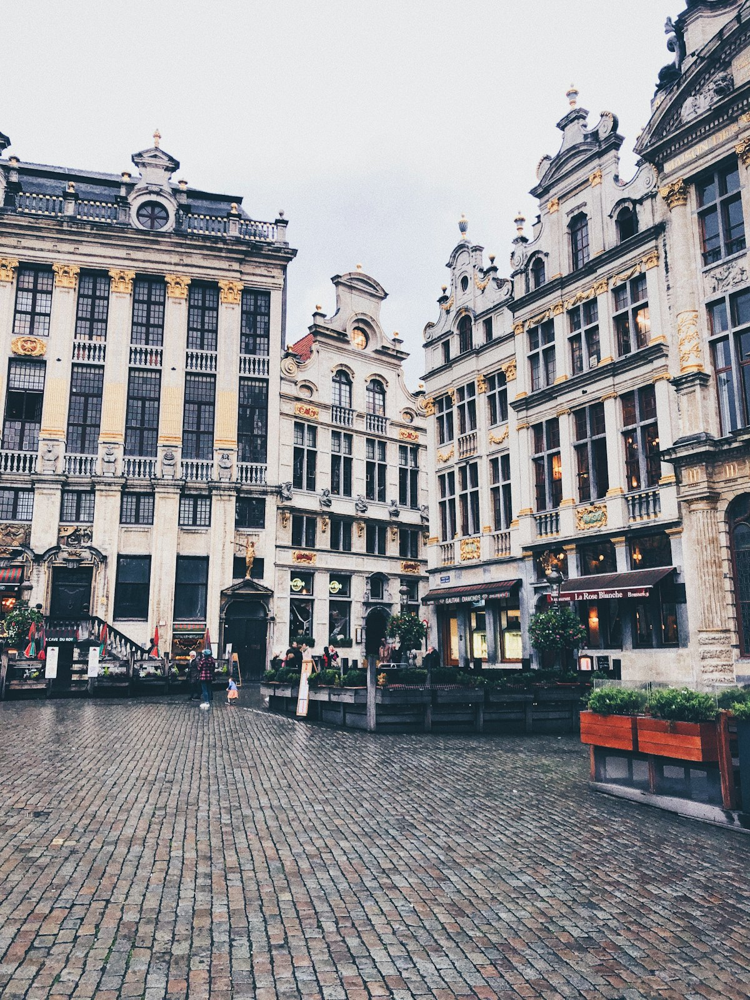
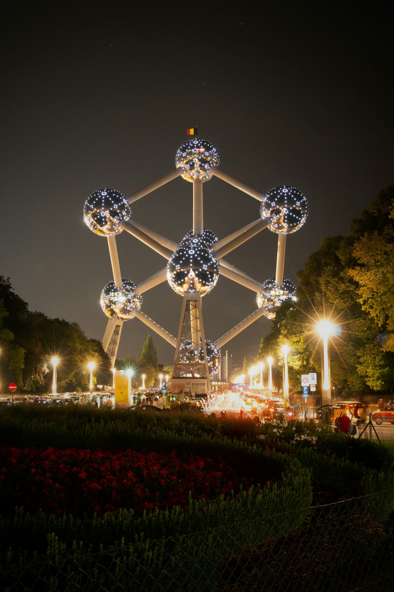
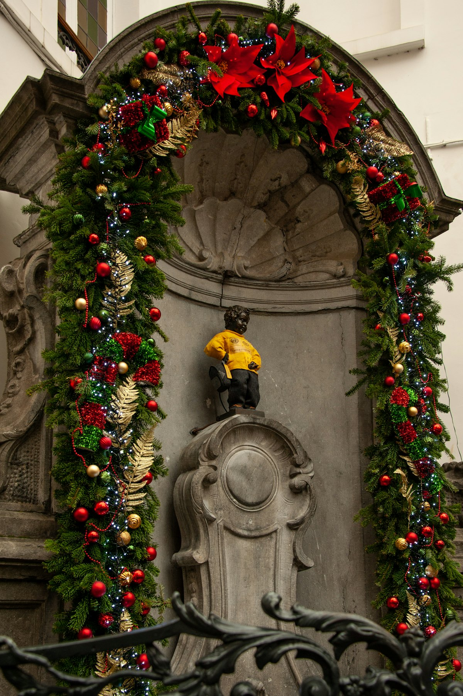
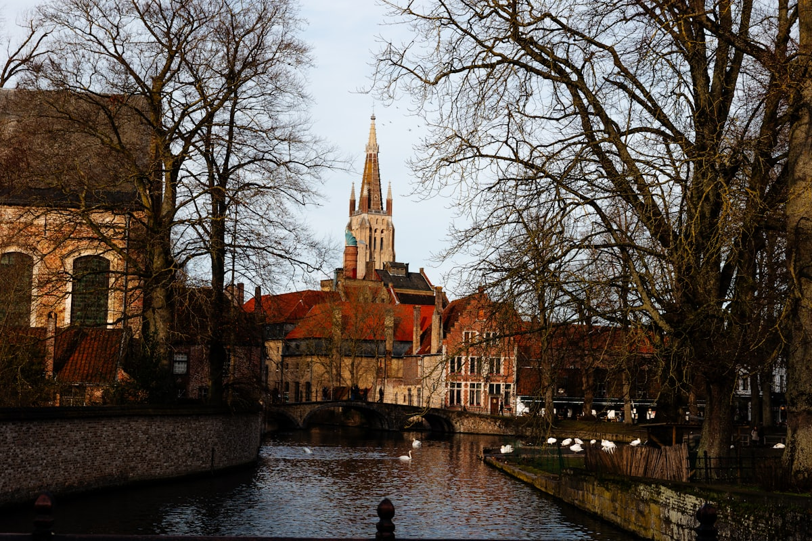
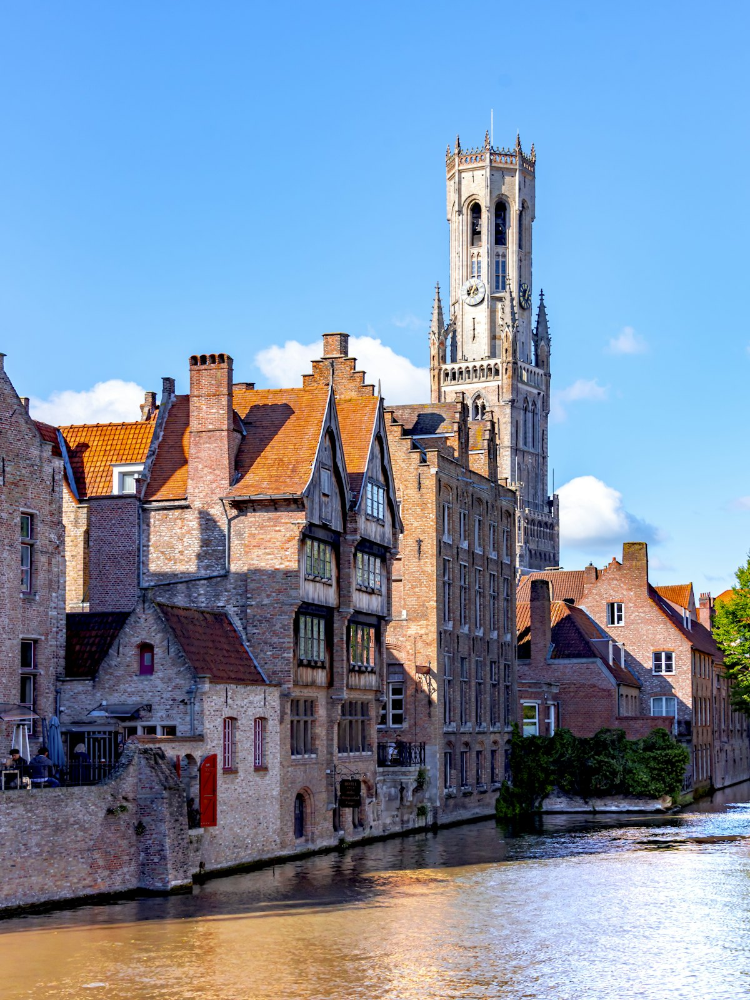
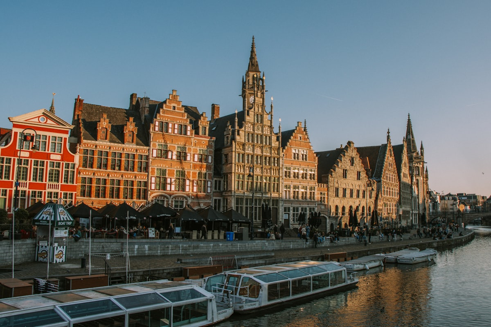
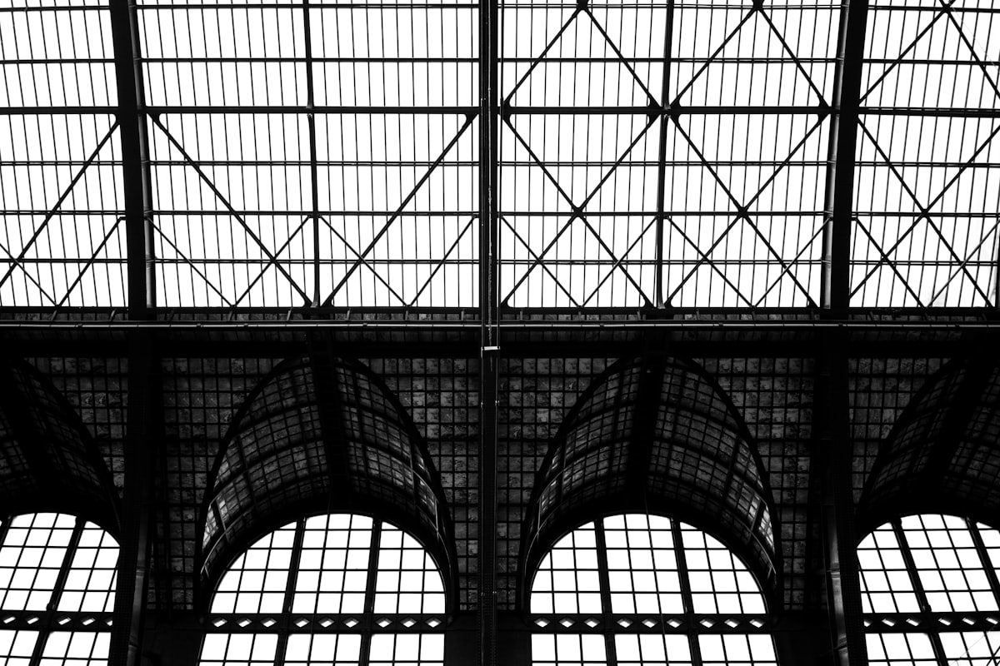
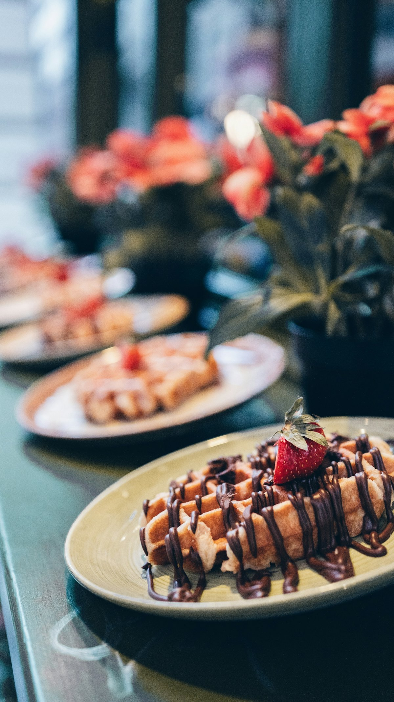

| 事项 | 结论 |
|---|---|
| 事项 | 结论 |
| 签证（最关键） | 中国护照需办申根签（C 类）。2026 年 5 月起费用 90 欧元 + 签证中心服务费 187 元，审理 2–15 个工作日，建议提前 1–3 个月办理 |
| 推荐方案 | 布鲁塞尔 3 天 + 布鲁日 2 天 + 根特 1 天 + 安特卫普 1 天，全程 SNCB 城际火车串城 |
| 返程约束 | 第 7 天从布鲁塞尔返程；北京⇄布鲁塞尔直飞（海南航空 HU491 / 国航 CA963）约 10.5 小时，凌晨起飞清晨抵达，返程亦然 |
| 行程链 | 北京 → 布鲁塞尔 → 布鲁日 → 根特 → 安特卫普 → 返程 |
| 预算（人均） | 经济 8000–12000 ／ 标准 14000–20000 ／ 舒适 30000–42000（人民币） |
| 三件提前事 | ① 办申根签 ② 订往返机票（提前 6–8 周）③ 布鲁日钟楼、原子球塔等热门门票官网预约 |
| 季节提醒 | 4–10 月最舒服；5–6 月布鲁日运河游船旺季、8 月啤酒节、12 月圣诞集市；11–2 月阴冷多雨但人少价低 |
| 支付与消费 | 欧元现金 + 芯片卡（带 PIN），多数店可刷 Visa/Mastercard，支持 Apple Pay；部分博物馆只收卡不收现金 |
以下为 7 天 6 晚的推荐节奏：前 3 天以布鲁塞尔为基地逛透都市核心，D4–D5 移师布鲁日慢游中世纪古城，D6 根特一日、D7 安特卫普收尾。每日主景点 ≤2 个，城际交通均靠 SNCB 城际火车。
| 日期 | 行程 | 过夜地 | 主题 |
|---|---|---|---|
| D1 抵布鲁塞尔 | 北京✈布鲁塞尔（直飞约 10.5h，清晨到），入住大广场附近，下午大广场+撒尿小童+圣于贝尔长廊 | 布鲁塞尔 | 抵达+都市初印象 |
| D2 | 原子球塔+迷你欧洲（半天）→ 漫画博物馆（丁丁/蓝精灵）→ 圣于贝尔长廊巧克力店 | 布鲁塞尔 | 现代布鲁塞尔 |
| D3 | 大广场深度+城市博物馆（登市政厅塔可选）→ 皇家美术馆（可选）→ 傍晚啤酒吧体验 | 布鲁塞尔 | 艺术与美食 |
| D4 | 火车到布鲁日（约 1h）：运河游船 → 市集广场钟楼登顶 → 圣血教堂+市政厅 | 布鲁日 | 中世纪水城 |
| D5 | 布鲁日慢游：圣母教堂+爱之湖 → 巧克力工坊 → 弗兰德啤酒博物馆（可选） | 布鲁日 | 古城慢日 |
| D6 | 火车到根特（约 30min）：圣巴夫大教堂（《神秘的羔羊》）→ 伯爵城堡 → 黄昏 Graslei 运河，晚回布鲁日 | 布鲁日 | 根特一日 |
| D7 返程 | 火车到安特卫普（约 1h）：中央车站 → 钻石区 → 鲁本斯故居 → 午后返布鲁塞尔机场飞北京 | — | 安特卫普+收尾 |
以下为 7 天全程的逐小时执行时间线，可当作「当天打开照着走」的清单。标注 ※ 的可选项视体力与天气取舍。
| 时间 | 事项 |
|---|---|
| 02:30–06:50 | 北京✈布鲁塞尔（海南航空 HU491，约 10h20m，凌晨起飞清晨降落），入境+取行李 |
| 07:30–09:00 | 机场城际火车（Airport Express）约 20 分钟到布鲁塞尔中央/南站，入住大广场周边酒店 |
| 10:00–12:30 | 大广场（Grand-Place）（免费，世界遗产）：市政厅哥特塔楼、黄金广场、行会楼群，注意脚下马赛克地面 |
| 13:00–14:30 | 午餐：大广场旁 Rue des Bouchers 或圣于贝尔长廊 café，先看菜单标价 |
| 15:00–17:00 | 撒尿小童（Manneken Pis）（免费）→ 圣于贝尔长廊（Galeries Royales）：拱顶玻璃廊道+巧克力橱窗 |
| 17:30–19:30 | 晚餐：比利时青口（Moules-frites），餐后大广场灯光夜景 |
| 时间 | 事项 |
|---|---|
| 08:30 | 地铁 6 号线至 Heysel 站，抵达原子球塔园区 |
| 09:30–12:00 | 原子球塔（Atomium）（成人 17 欧元，含设计博物馆）：1958 世博会标志，登上 92m 顶部球体俯瞰布鲁塞尔，必坐透明观景电梯 |
| 12:00–13:30 | 迷你欧洲（Mini-Europe）（成人 19 欧左右，可买联票）：1/25 比例缩微欧盟地标，1.5 小时逛完 |
| 14:30–16:30 | 返回市中心：比利时漫画博物馆（Belgian Comic Strip Center）（成人 13 欧元）：新艺术建筑+丁丁、蓝精灵、Lucky Luke 原稿展 |
| 17:00–19:00 | 圣于贝尔长廊扫货：Pierre Marcolini、Neuhaus、Mary 手工巧克力，广场旁找家店吃华夫饼 |
| 19:30 | 晚餐：比利时薯条+啤酒，可选弗兰德炖牛肉 |
| 时间 | 事项 |
|---|---|
| 09:00–11:00 | 布鲁塞尔城市博物馆（Maison du Roi）（成人约 8 欧元）：原版撒尿小童雕像+城市历史，位于大广场东侧 |
| 11:00–12:30 | 登市政厅哥特塔楼（季节限定，约 6–8 欧元）：俯瞰大广场最正机位 |
| 12:30–14:00 | 午餐：布鲁塞尔华夫饼（waffle）当甜点，主餐选当地 Trattoria |
| 14:30–17:30 | 皇家美术馆（Royal Museums of Fine Arts）（成人约 10 欧元）：老馆藏鲁本斯/勃鲁盖尔，新馆为马格里特超现实主义，两馆通票约 15 欧元 |
| 18:00–20:00 | Delirium 啤酒村：2000+ 种啤酒，点经典 Tripel/Kriek 樱桃啤酒配小食 |
| 时间 | 事项 |
|---|---|
| 08:30 | 布鲁塞尔中央站乘 SNCB 城际火车到布鲁日（约 1h，€14.8），入住古城内酒店 |
| 10:00–11:00 | 运河游船（成人 15 欧元，30 分钟）：五家公司统一价，现场码头排队购票，建议去 Rozenhoedkaai 玫瑰码头 |
| 11:00–12:30 | 市集广场（Markt）：彩色行会楼+马车，拍钟楼全景 |
| 13:00–14:00 | 午餐：布鲁日薯条+淡菜 |
| 14:00–15:30 | 布鲁日钟楼（Belfort）登顶（成人 16 欧元）：366 级旋转台阶，登顶俯瞰红瓦古城+运河；限流需提前预约 |
| 16:00–17:30 | 圣血教堂（Basilica of the Holy Blood）（免费，博物馆约 2 欧元）：基督圣血圣物+双色大理石，市政厅哥特外墙 |
| 18:30 | 晚餐：运河边餐厅吃青口锅，傍晚玫瑰码头灯光夜景 |
| 时间 | 事项 |
|---|---|
| 09:00–11:00 | 圣母教堂（Church of Our Lady）（免费，塔楼约 6 欧元）：米开朗基罗《布鲁日圣母》雕像，仅次圣彼得大教堂的 122m 砖塔 |
| 11:00–12:30 | 爱之湖（Minnewater）（免费）：天鹅+古桥+修道院，布鲁日最上镜角落之一 |
| 12:30–13:30 | 午餐：法兰德斯炖牛肉（Stoofvlees）+樱桃啤酒 |
| 14:00–16:00 | 巧克力工坊（约 15–20 欧元）：亲手做比利时松露巧克力，或逛格鲁修瑟博物馆（成人 8 欧元） |
| 16:30–18:00 | 弗兰德啤酒博物馆（Bruges Beer Museum）（约 15 欧元）或回到市集广场听钟琴音乐会 |
| 18:30 | 晚餐：运河游船夜景+华夫饼夜宵 |
| 时间 | 事项 |
|---|---|
| 08:30 | 布鲁日乘火车到根特 Sint-Pieters 站（约 30min，€6.8），换乘电车 1 路进老城 |
| 09:30–12:00 | 圣巴夫大教堂（St. Bavo's Cathedral）：《神秘的羔羊》祭坛画（全票 12.5 欧元含 AR 平板，只看祭坛 6 欧元）+ 鲁本斯《圣巴夫入教》 |
| 12:00–13:30 | 午餐：Graslei 河畔露天座，Waterzooi 白汁炖鸡 |
| 13:30–16:00 | 伯爵城堡（Gravensteen）（成人 15 欧元，含语音导览）：中世纪伯爵堡垒，登上城头俯瞰运河与红瓦老城 |
| 16:00–17:30 | Graslei/Korenlei 河岸（免费）：中世纪行会楼群+圣尼古拉斯教堂，黄昏光线最佳 |
| 17:30–18:00 | 乘火车返回布鲁日，晚餐在当地 |
| 时间 | 事项 |
|---|---|
| 07:30 | 布鲁日乘火车到安特卫普中央站（约 1h，中途经根特/布鲁塞尔） |
| 09:00–10:00 | 安特卫普中央车站（Antwerpen-Centraal）（免费）：「世界最美火车站」，玻璃穹顶+大理石大厅，必拍角度在二楼月台层 |
| 10:00–11:00 | 钻石区（免费）：中央车站旁 Hoveniersstraat，全球钻石交易中心，可看橱窗与加工 |
| 11:00–12:30 | 鲁本斯故居（Rubenshuis）（成人 12 欧元）：巴洛克画家工作室+巴洛克花园；主体馆正翻新，Rubens Experience 展仍开放 |
| 12:30–13:30 | 午餐：安特卫普薯条（排名欧洲第一的 Frites Atelier） |
| 14:00 | 安特卫普中央站乘火车回布鲁塞尔机场（约 1h） |
| 17:00–23:30 | 布鲁塞尔✈北京（约 10.5h），到家休息 |
必去（必去）/ 顺路（顺路）/ 可跳过（可跳过）。

必去
必去
必去
必去
必去
必去
顺路图片为 Unsplash 主题图（大广场、原子球塔、布鲁日运河、根特河岸、安特卫普中央车站等均为比利时实景），用于页面配图。更多免费景点：布鲁日爱之湖、根特 Graslei 河岸、安特卫普中央车站大厅、布鲁塞尔五十周年纪念公园。
点击左侧节点可在地图上定位；点击地图 marker 会高亮对应节点。坐标为 WGS-84 转 GCJ-02 纠偏后标注。
以下为单人、不含购物的估算，人民币计价；出发地基准北京。汇率按 1 欧元 ≈ 7.8 元人民币估算。往返机票按淡季直飞 6000–9000 元计，转机可省 1500 元左右；冬季（11–2 月）价格整体低一档。
| 项目 | 经济（8000–12000） | 标准（14000–20000） | 舒适（30000–42000） |
|---|---|---|---|
| 往返机票 | 转机 4500–5500 | 直飞（海航/国航）6000–7500 | 直飞+灵活时段/升舱 12000–18000 |
| 住宿（6 晚） | 青旅/民宿 350–500/晚 | 三星酒店 800–1200/晚 | 精品/四星 2000–3500/晚 |
| 交通（境内） | SNCB 城际+市内卡 800–1200 | 城际火车+公交+打车少量 1500–2200 | 城际一等座+包车 4000–6000 |
| 门票 | 基础景点 1000–1500 | 全含（原子球塔/钟楼/圣巴夫/鲁本斯）2500–3500 | 全含+讲解/演出/体验课 4000–6500 |
| 餐饮（7 天） | 超市+薯条简餐 2000–2800 | 正常下馆子+啤酒 4000–6000 | 米其林/青口大餐 9000–14000 |
带娃推荐：原子球塔+迷你欧洲+漫画博物馆三连（孩子最爱），布鲁日运河游船必坐，砍掉皇家美术馆与鲁本斯故居；安特卫普动物园紧邻中央车站，可加 2 小时。比利时城市间全是短途火车，节奏天然友好。
12 月布鲁塞尔与布鲁日都有圣诞集市（木屋+热红酒+巧克力），布鲁日运河两岸挂满灯饰；冬季机票与酒店便宜 30% 左右，但阴冷多雨，羽绒服与防水鞋必备。布鲁日钟楼冬季票价 15 欧元，比夏季便宜 1 欧。
| 方式 | 时长 | 参考价 | 备注 |
|---|---|---|---|
| 直飞（推荐） | 北京→布鲁塞尔约 10.5h | 往返 6000–9000 元 | 海南航空 HU491 / 国航 CA963，波音 787，凌晨起飞清晨到 |
| 转机 | 13–18h | 4500–6000 元 | 经上海/广州/香港/迪拜转机，便宜但费时 |
| 欧洲联游 | — | 视线路 | 布鲁塞尔机场有欧洲之星/Thalys 高铁接巴黎、阿姆斯特丹，可顺带串游 |
| 区域 | 价格/晚 | 优点 | 短板 |
|---|---|---|---|
| 布鲁塞尔·大广场/中央站 | 经济 450–650 / 标准 900–1500 | 景点步行可达，机场火车直达 | 游客多，旺季贵 |
| 布鲁塞尔·圣凯瑟琳区 | 经济 400–600 / 标准 800–1300 | 美食街区，安静宜居 | 离大广场步行约 10 分钟 |
| 布鲁日·古城内 | 经济 550–750 / 标准 1000–1600 | 推窗即运河，童话氛围 | 石板路拖行李累，隔音一般 |
| 布鲁日·火车站旁 | 经济 400–600 / 标准 800–1200 | 性价比高，赶早班车方便 | 离古城步行 15 分钟 |
| 安特卫普·中央站旁 | 经济 450–650 / 标准 850–1300 | 交通枢纽，钻石区边上 | 晚间街区偏静 |